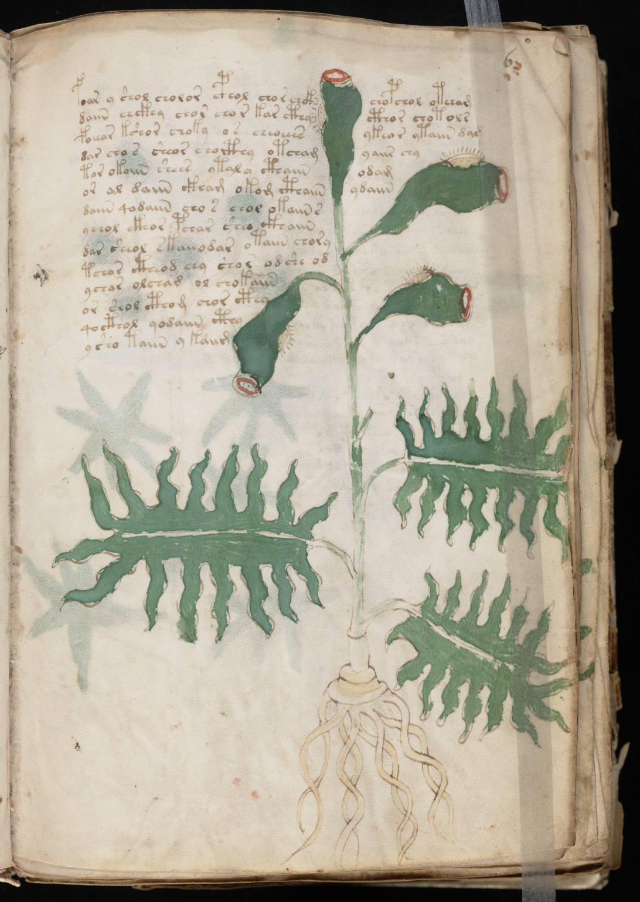

f6r
1foar y shol cholor cphol chor chckhchopchol otcham2daiin chckhy chor chor kar cthycthor chotols3poeear kshor choky os cheoeesykeor ytaiin dar4dar cho s sheor chocthy otchamyaiir chy5tar okoiin shees ytaly cthaiinodam6or al daiin ckham okom cthaiinydaiin7daiin qodaiin cho s chol okaiin s8ychol ckhor pchar sheo ckhaiin9dar sheeol skaiiodar otaiin chory10tchor ctheod chy shor odshe od11ychar olchad ol chokaiin12or shol cthom chor cthy13qocthol qodaiin cthy14ysho taiin y kaiim
